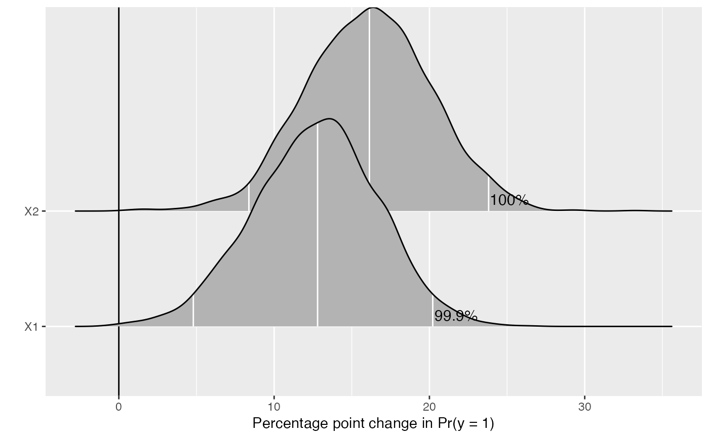

The plot method for first differences generated from MCMC
output by mcmcFD. For more on this method, see Long
(1997, Sage Publications), and King, Tomz, and Wittenberg (2000, American
Journal of Political Science 44(2): 347-361). For a description of this type
of plot, see Figure 1 in Karreth (2018, International Interactions 44(3): 463-90).
# S3 method for mcmcFD plot(x, ROPE = NULL, ...)
| x | Output generated from |
|---|---|
| ROPE | defaults to NULL. If not NULL, a numeric vector of length two, defining the Region of Practical Equivalence around 0. See Kruschke (2013, Journal of Experimental Psychology 143(2): 573-603) for more on the ROPE. |
| ... |
a density plot of the differences in probabilities. The plot is made with ggplot2 and can be
passed on as an object to customize. Annotated numbers show the percent of posterior draws with
the same sign as the median estimate (if ROPE = NULL) or on the same side of the
ROPE as the median estimate (if ROPE is specified).
Karreth, Johannes. 2018. “The Economic Leverage of International Organizations in Interstate Disputes.” International Interactions 44 (3): 463-90. https://doi.org/10.1080/03050629.2018.1389728.
King, Gary, Michael Tomz, and Jason Wittenberg. 2000. “Making the Most of Statistical Analyses: Improving Interpretation and Presentation.” American Journal of Political Science 44 (2): 347–61. http://www.jstor.org/stable/2669316.
Kruschke, John K. 2013. “Bayesian Estimation Supersedes the T-Test.” Journal of Experimental Psychology: General 142 (2): 573–603. https://doi.org/10.1037/a0029146.
Long, J. Scott. 1997. Regression Models for Categorical and Limited Dependent Variables. Thousand Oaks: Sage Publications.
.old_wd <- setwd(tempdir()) # \donttest{ ## simulating data set.seed(123456) b0 <- 0.2 # true value for the intercept b1 <- 0.5 # true value for first beta b2 <- 0.7 # true value for second beta n <- 500 # sample size X1 <- runif(n, -1, 1) X2 <- runif(n, -1, 1) Z <- b0 + b1 * X1 + b2 * X2 pr <- 1 / (1 + exp(-Z)) # inv logit function Y <- rbinom(n, 1, pr) df <- data.frame(cbind(X1, X2, Y)) ## formatting the data for jags datjags <- as.list(df) datjags$N <- length(datjags$Y) ## creating jags model model <- function() { for(i in 1:N){ Y[i] ~ dbern(p[i]) ## Bernoulli distribution of y_i logit(p[i]) <- mu[i] ## Logit link function mu[i] <- b[1] + b[2] * X1[i] + b[3] * X2[i] } for(j in 1:3){ b[j] ~ dnorm(0, 0.001) ## Use a coefficient vector for simplicity } } params <- c("b") inits1 <- list("b" = rep(0, 3)) inits2 <- list("b" = rep(0, 3)) inits <- list(inits1, inits2) ## fitting the model with R2jags set.seed(123) fit <- R2jags::jags(data = datjags, inits = inits, parameters.to.save = params, n.chains = 2, n.iter = 2000, n.burnin = 1000, model.file = model)#> Compiling model graph #> Resolving undeclared variables #> Allocating nodes #> Graph information: #> Observed stochastic nodes: 500 #> Unobserved stochastic nodes: 3 #> Total graph size: 3506 #> #> Initializing model #>## preparing data for mcmcFD() xmat <- model.matrix(Y ~ X1 + X2, data = df) mcmc <- coda::as.mcmc(fit) mcmc_mat <- as.matrix(mcmc)[, 1:ncol(xmat)] ## plotting with mcmcFDplot() full <- mcmcFD(modelmatrix = xmat, mcmcout = mcmc_mat, fullsims = TRUE) plot(full)#>